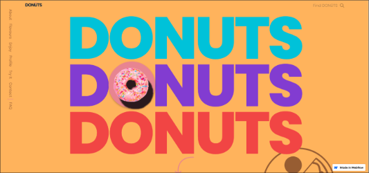
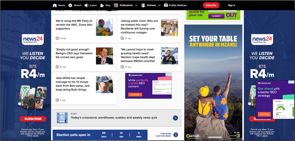

Theory
Research
These are some websites from artists that are inspirational to me, as a creative, as well as others that inspired me in terms of the look and feel that I want to invoke in my website.

I really like the April Ford website because it uses a limited colour palette, it has incredible structure, and it is easy to use. It consists of 5 colours; black, white, blue, purple, and grey and each colour has a purpose. Important words are styled in blue, text is written in black, the background is white, the banners are purple and images are grey. This shows users that there each colour is significant in different ways. The website has a balanced layout which is very pleasing to the eye and the font they used is readable and legible.
I also like the Donuts website because of its use of colour and layout. They used a wide range of pastel and solid colours and they compliment each other very well. The website is structured as one continuous page but with each scroll a new element is introduced. I found this interesting because, in theory this would be overwhelming but I found it visually satisfying. The layout is mixture of balanced, asymmmetrical, and radial. The font is also readable and legible.
Information: News24 is a South African news website. Users are able to read the latest news in South Africa and all over the world, about life, business, politics, and sports. Users can choose to listen to the news through podcasts and audio files and they can watch live recordings of news reports. Users can also subscribe to News24 to receive a daily newsletter. Like paper-based newspapers, News24 has a "play" tab where subscribers can play Crosswords, Sudoku, Wordflower, and Quizzes. I think the target audience for this website is young adults because they are more likely to get their news online than elders who mostly prefer watching the news on TV or even reading paper-based newspapers. Pros and Cons: A pro of News24 is that it has a search bar so users will be able to search for any news story without having to scour the entire website. Another thing is that its navigation bar is detailed, when you hover over one tab, a drop-down list appears of all the pages within the website that are related to that topic. Therefore I would say that it has a relatively good user experience. However, the website does not have good UI design. This is because the user is met with a lot of information and images immediately after opening the website. This is bad because it causes information overload and can hinder the user's experience of the website.